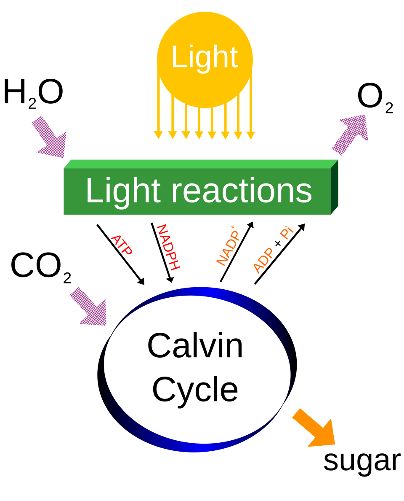
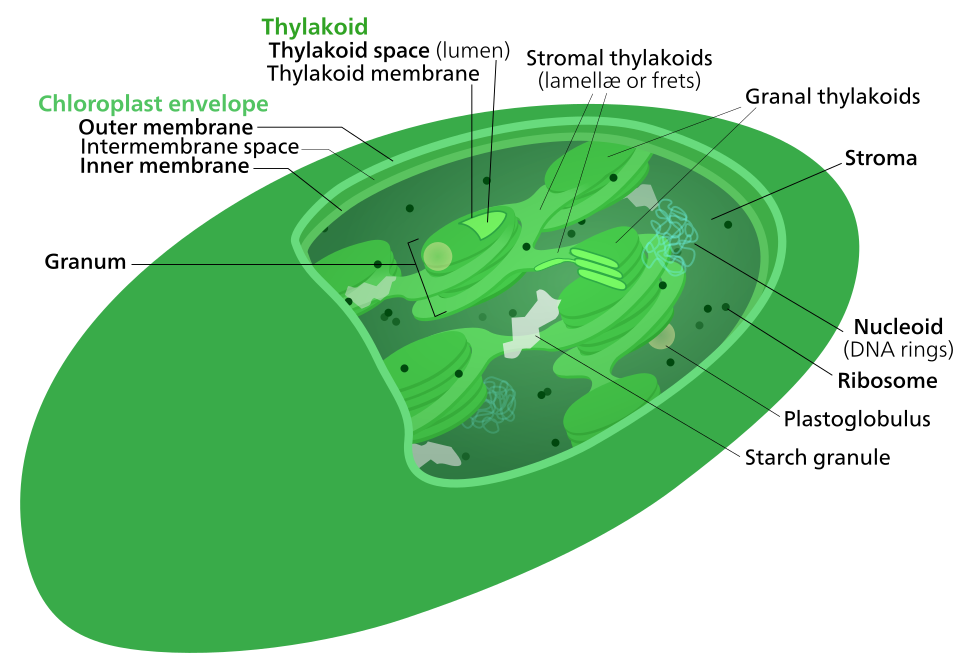
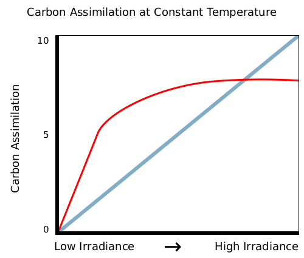
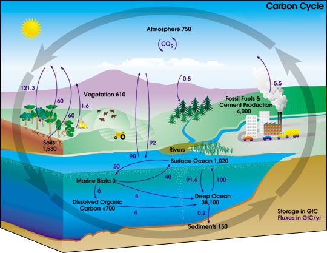
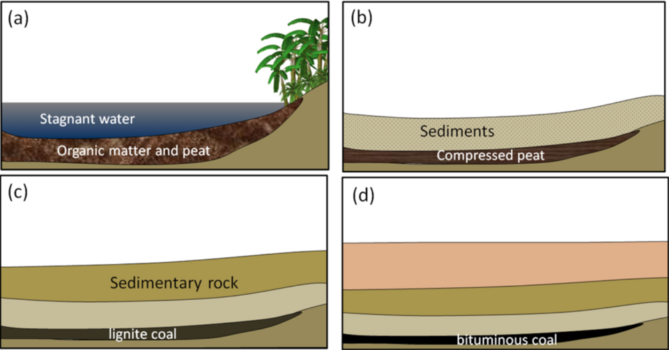
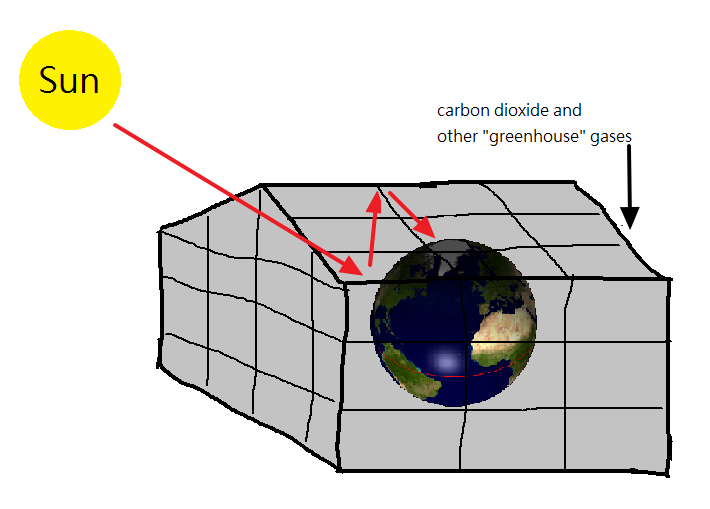
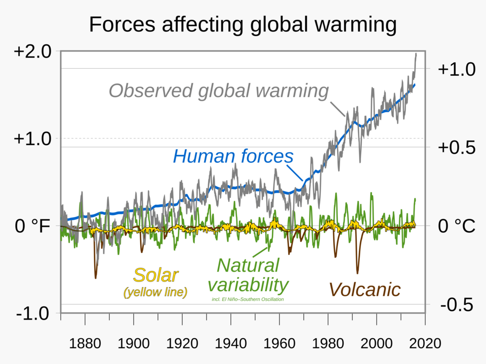

Light 빛 + Carbon dioxide + Water 물 → Glucose 포도당 + Oxygen 산소
Photosynthesis is the process where plants make their own food (glucose) using light energy.
광합성은 식물이 빛에너지를 이용해 스스로 양분(포도당)을 만드는 과정입니다.
The word equation is: carbon dioxide + water → glucose + oxygen (light energy and chlorophyll are needed).
낱말 반응식: 이산화탄소 + 물 → 포도당 + 산소 (빛에너지와 엽록소가 필요).
Oxygen is released as a waste product.
산소는 부산물로 방출됩니다.

Photosynthesis happens in chloroplasts, which contain the green pigment chlorophyll.
광합성은 초록 색소 엽록소가 들어있는 엽록체에서 일어납니다.
Chlorophyll absorbs light energy from the Sun.
엽록소는 태양의 빛에너지를 흡수합니다.
Palisade cells near the top of the leaf are packed with chloroplasts.
잎 윗부분의 울타리조직세포에는 엽록체가 가득합니다.

A limiting factor is something that stops photosynthesis going any faster.
제한 요인은 광합성을 더 빠르게 못 하도록 막는 것입니다.
The three main ones are light intensity, carbon dioxide level and temperature.
주요 세 가지는 빛의 세기, 이산화탄소 농도, 온도입니다.

Plants change glucose into starch for storage.
식물은 포도당을 저장하려고 녹말로 바꿉니다.
We test for starch using iodine solution — it turns blue-black if starch is present.
아이오딘 용액으로 녹말을 검사합니다 — 녹말이 있으면 청람색으로 변합니다.
A variegated leaf (green and white) shows that chlorophyll is needed: only the green parts make starch.
얼룩(반엽) 잎은 엽록소가 필요함을 보여줍니다 — 초록 부분만 녹말을 만듭니다.
The carbon cycle describes how carbon moves between the air, living things and the ground.
탄소 순환은 탄소가 공기·생물·땅 사이를 어떻게 도는지 설명합니다.
Photosynthesis removes carbon dioxide from the air.
광합성은 공기에서 이산화탄소를 제거합니다.
Respiration, combustion and decomposition add carbon dioxide back to the air.
호흡·연소·분해는 이산화탄소를 공기로 다시 내보냅니다.

Decomposers (bacteria and fungi) break down dead matter and release carbon dioxide.
분해자(세균·곰팡이)는 죽은 물질을 분해하며 이산화탄소를 내보냅니다.
Burning fossil fuels (coal, oil, gas) releases a lot of extra carbon dioxide.
화석 연료(석탄·석유·가스)를 태우면 이산화탄소가 많이 추가로 나옵니다.

Greenhouse gases (such as carbon dioxide and methane) trap heat in the atmosphere — this is the greenhouse effect.
온실 기체(이산화탄소·메테인 등)가 대기에 열을 가두는데, 이를 온실 효과라 합니다.
Too much greenhouse gas causes global warming and climate change.
온실 기체가 너무 많으면 지구 온난화와 기후 변화가 일어납니다.

Burning fossil fuels and deforestation increase carbon dioxide in the air.
화석 연료를 태우고 삼림을 벌채하면 공기 중 이산화탄소가 늘어납니다.
We can reduce our carbon footprint by using less energy and planting trees.
에너지를 덜 쓰고 나무를 심어 탄소 발자국을 줄일 수 있습니다.
